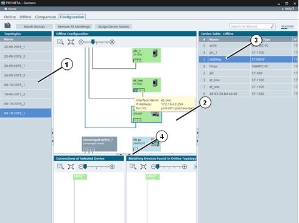
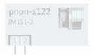
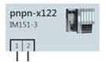

图标
名称
功能

添加拓扑文件
将之前存储的拓扑 添加到拓扑列表中。
匹配设备
尝试根据 组态模式中的匹配条件 对参考网络和物理网络中的设备进行匹配；找到的匹配设备以绿色突出显示。
删除所有匹配
丢弃上次匹配操作的结果。
分配设备名称
将参考网络中找到匹配的所有设备的设备名称写入物理网络中的相应设备。
PRONETA Basic 的网络分析可帮助用户快速了解 PROFINET 网络中安装的设备及其彼此互连的方式。“网络分析”(Network Analysis) 还允许用户查看和更改设备的各种网络参数，如 IP 地址、设备名称等。
可以将不同的网络相互比较，并且可以自动或手动组态设备。
“组态”(Configuration) 模式提供一种半自动机制，可将参考网络中的设备名称分配到物理网络中的全部设备或单台设备。
这种机制为组态大量相同安装操作（例如安装一系列开关柜）提供了一种快速可靠的方法。随后，可在“ 比较模式”(Comparison Mode)中检查结果。
主画面分为：
A 拓扑列表 (1)
一个主（顶部）和两个小（底部）图形视图 (2)
A 设备表 (3)，包含选定拓扑中存储的设备

功能栏
功能栏中提供以下功能：
|
图标 |
名称 |
功能 |
|
|
添加拓扑文件 |
将之前存储的拓扑 添加到拓扑列表中。 |
|
|
匹配设备 |
尝试根据 组态模式中的匹配条件 对参考网络和物理网络中的设备进行匹配；找到的匹配设备以绿色突出显示。 |
|
|
删除所有匹配 |
丢弃上次匹配操作的结果。 |
|
|
分配设备名称 |
将参考网络中找到匹配的所有设备的设备名称写入物理网络中的相应设备。 |
最后两个命令在设备的快捷菜单中有配对命令。这些命令不在网络的所有设备上运行，而仅在所选设备中运行。
图形视图
“图形视图”(Graphical View) 是 PROFINET 网络的一种图形显示形式。有关其操作的详细信息，请参见在线模式下的 图形视图。
设备颜色表示设备组态的可用性：
|
图标 |
颜色 |
含义 |
|
 |
灰显 |
在物理网络中未找到参考网络中此设备的匹配设备。 |
|
 |
浅灰色 |
尚未执行匹配，或在物理网络中未找到此设备的唯一匹配设备。 |
|
|
绿色 |
参考网络中的设备已成功与物理网络中的设备匹配，或用户已手动匹配设备。 |
将鼠标指针悬停在设备上时，会显示“设备工具提示”(Device Tooltip)，其中包含设备的基本信息。
工具栏
在视图顶部有一个带有各种功能图标的工具栏：
|
图标 |
名称 |
功能 |
|
|
缩放选择 |
可使用此工具在“图形视图”(Graphical View) 中绘制一个矩形。释放鼠标按钮后，视图便会缩放以显示矩形区域。 |
|
|
根据画面大小进行缩放 |
将视图缩放到所有网络设备都适合显示在视图内的大小。 |
|
|
缩放条 |
可向左或向右拖动手柄或单击“-”或“+”放大或缩小网络。（还可以通过将鼠标置于视图上并使用鼠标滚轮来放大和缩小图形视图。） |
设备快捷菜单
右键单击“图形视图”(Graphical View) 或相应“设备表”(Device Table) 中的任意设备，可调出具有各种功能的快捷菜单。
并非所有的菜单条目都适用于具有实际条目的所有设备，具体取决于设备状态和设备类型。
|
图标 |
名称 |
功能 |
|
|
分配设备名称 |
将设备名称从参考拓扑复制到物理网络中与其匹配的设备。 |
|
|
删除匹配 |
丢弃“图形视图”(Graphical View) 中的匹配结果。 |
|
|
用作图形视图的起点 |
使用左上角的选定设备重绘图形视图。 |
设备表
此表列出了所选参考网络中现有的设备。处理方式与在线模式下的“设备表”(Device Table) 类似，但禁用全部写操作。
在此模式下，设备间的匹配基于以下内容确定：
设备 ID
供应商 ID
设备间的连接
请注意，以上匹配项固定，不同之处在于比较模式下确定差异的方式 - 请参 设置比较条件。